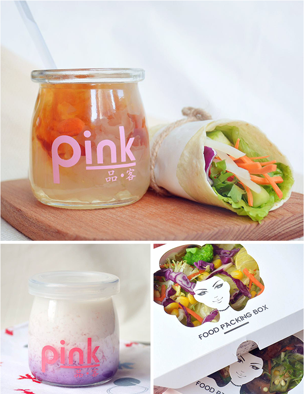

品牌阐述
精磨细煮的甜品，本身就是一碗绝佳的药膳，品客以食材为载体，向人们传播绿色的食养甜品理念，坚信好食材才有好味道，对食材的渴求，不是宽泛在一个国家，一个省，而是聚焦在一个时节。顺时调养，应季而食。夏秋时节，是桃胶最好的采撷时间，在浙江苍南玉苍山，没有开发的原始森林里，空气宜人，山清水秀，漫山桃树香气最浓郁的时刻在正午时分，那么你的每一口桃胶，便是这正午的味道。好水酿甜汤，优质的辅料同样不可怠慢。在品客，每一份甜品的味道都必须惊艳，足够简单的优质食材配以广西茉莉之乡，赋存于4亿年前古生代的时期形成的泥盆系下水源地的极软山泉水，慢火熬制3小时以上，让山泉水的清甜与食材得到充分融合。 含有多种对人体有益的微量元素和矿物质的高品位天然极软山泉水，赋予了甜品新的生命力和大自然味道。
品客用最好的食材，哪怕寻遍世界，只为熬出一碗料足且用心的健康绿色甜品。
仅仅有情怀是永远不够的，品客不仅善用古方，还坚持使用优质食材，以好水熬甜汤，让传统甜品得以延续，让现代人以食养生。我们的服务包含：
全南宁市区配送
企业员工福利&客户礼品
会议&Party的茶歇服务
Tel ：400-0771-856 0771-5873500

 返回顶部
返回顶部